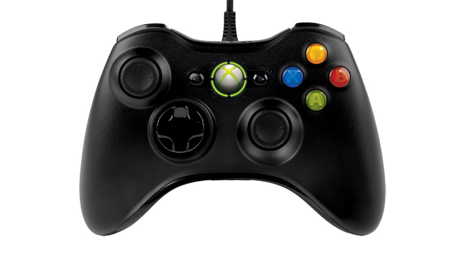

Xbox 360
Brief description
The Xbox 360 code name xenon is a seventh generation video game console developed by Microsoft. Released on November 22, 2005, it is the successor to the original Xbox, it is the second console in the Xbox family. The Xbox 360 competed with Sony's PlayStation 3 and Nintendo's Wii as part of the seventh generation of video game consoles. It was officially unveiled on MTV on May 12, 2005, with detailed launch and game information announced later that month at the 2005 Electronic Entertainment Expo. The Xbox 360's successor, the Xbox One was released on November 22, 2013. On April 20, 2016, Microsoft announced that it would end the production of Xbox 360 hardware, but thankfully to xbox 360 owners Microsoft would still continue to support the platform. the xbox 360 was a massive hit selling around 84 million units
Features
| The Xbox 360 also included a number of new features and add ons such as- the ability to stream music, television and films though Xbox Music, Xbox Video and third-party content services. New wireless controllers with a number of designs, expanded hard drives and the Kinect sensor. The release of these additional services and peripherals helped the Xbox brand grow from gaming-only to encompassing all multimedia. The Xbox 360 also brings back Xbox Live with a number of improvements and new features. The main unit of the Xbox 360 itself has slight double concavity in matte white or black. The official color of the white model is Arctic Chill. It features a port on the top when vertical (left side when horizontal) to which a custom-housed hard disk drive unit can be attached. the xbox's technical |  |
Hardware specifications
the xbox's hardware specifications were a great improvement from the original in every aspect the specifications and are as follows.
| dimensions | 10.6 x 2.95 x 10.39 inches |
| weight | 6.39 pounds |
| processing power |
CPU: 3.2-GHz PowerPC Tri-Core Xenon GPU: 500 MHz ATI Xenos |
| Memory | 512MB DDR3 |
| Hard drive | Built in,250GB |
| I/O | USB 2.0 X 5, AUX |
| Communication | Ethernet (100BASE-TX), IEEE 802.11 b/g/n Wi-Fi |
controller
The Xbox 360 controller is the primary game controller for Microsoft's Xbox 360 home video game console that was introduced at E3 2005. The Xbox 360 controller comes in both wired and wireless versions. The Xbox controller is not compatible with the Xbox 360. The wired and wireless versions are also compatible with Microsoft PC operating systems, such as Windows XP, Windows Vista, Windows 7, Windows 8, and Windows 10. The wireless controllers run on either AA batteries or a rechargeable battery pack. The wired controllers may be connected to any of the USB ports on the console, or to an attached USB hub.
| The Xbox 360 controller received positive reviews when it was released. Before then, as IGN stated, the original Xbox controller was "huge, ugly, cheap, and uncomfortable" and concluded to be an "abomination". Many of these problems were corrected with Microsoft's releases of the Xbox controller S and then the Xbox 360 controller. IGN credited the Xbox 360 controller for its being one of "the most ergonomically comfortable console controllers around". It was also praised for its improved button placement, its functioning logo as a button, and Microsoft's choice of bottom-mounting headset ports as opposed to top-mounting them so as to minimize snagged wire problems |  |
Development
Known during development as Xbox Next, Xenon, Xbox 2, Xbox FS or NextBox, the Xbox 360 was conceived in early 2003. In February 2003, planning for the Xenon software platform began, and was headed by Microsoft's Vice President J Allard. That month, Microsoft held an event for 400 developers in Bellevue, Washington to recruit support for the system. Also that month, Peter Moore, former president of Sega of America, joined Microsoft. On August 12, 2003, ATI signed on to produce the graphic processing unit for the new console, a deal which was publicly announced two days later. Before the launch of the Xbox 360, several Alpha development kits were spotted using Apple's Power Mac G5 hardware. This was because the system's PowerPC 970 processor running the same PowerPC architecture that the Xbox 360 would eventually run under IBM's Xenon processor. The cores of the Xenon processor were developed using a slightly modified version of the PlayStation 3's Cell Processor PPE architecture. According to David Shippy and Mickie Phipps, the IBM employees were "hiding" their work from Sony and Toshiba, IBM's partners in developing the Cell Processor.
Impact
Launch
The Xbox 360 was released on November 22, 2005, in the United States and Canada; December 2, 2005, in Europe and December 10, 2005, in Japan. It was later launched in Mexico, Brazil, Chile, Colombia, Hong Kong, Singapore, South Korea, Taiwan, Australia, New Zealand, South Africa, India, and Russia. In its first year on the market, the system launched in 36 countries, more countries than any other console has launched in a single year at the time.
Reception
In 2009, IGN named the Xbox 360 the sixth-greatest video game console of all time, out of a field of 25. Although not the best-selling console of the seventh-generation, the Xbox 360 was deemed by Techradar to be the most influential, by emphasizing digital media distribution and online gaming through Xbox Live, and by popularizing game achievement awards. PC Magazine considered the Xbox 360 the prototype for online gaming as it "proved that online gaming communities could thrive in the console space". the 360 was also praised for it's PC-like architecture that meant that the early EA sports games ran at 60fps compared to only 30 on PS3. Xbox Live meant every dedicated player had an existing friends list, and Halo meant Microsoft had the killer next-generation exclusive. And when developers demo games on PC now they do it with a 360 controller which is another industry benchmark.
Importance
The Xbox 360 sold much better than its predecessor, and although not the best-selling console of the seventh generation, it is regarded as a success since it strengthened Microsoft as a major force in the console market at the expense of well-established rivals. The inexpensive Nintendo Wii did sell the most console units but eventually saw a collapse of third-party software support in its later years, and it has been viewed by some as a fad since the succeeding Wii U had a poor debut in 2012. The PlayStation 3 struggled for a time due to being too expensive and initially lacking quality games, making it far less dominant than its predecessor, the PlayStation 2, and it took until late in the PlayStation 3's lifespan for its sales and games to reach parity with the Xbox 360. Techradar proclaimed that "Xbox 360 passes the baton as the king of the hill – a position that puts all the more pressure on its successor, Xbox One"
Red ring of death
| even though the xbox 360 was very succesful their were complications that made Microsoft receive alot of backlash one of the most famous ones being "the red ring of death" The Red Ring of Death is when three flashing red lights around the Xbox 360 power button instead of the one to four green lights indicating normal operation represent an internal problem that requires service. This error was soon nicknamed the "Red Ring of Death", "Red Lights of Death" or "Red Ring of Doom" by users, echoing Windows' Blue Screen of Death error. Warning signs may include freeze-ups, graphical problems in the middle of gameplay, such as checkerboard or pinstripe patterns on the screen, and sound errors, and the console only responds to pressing the power button to turn it off. These events may happen once or several times until the hardware failure occurs, or not at all. if it wasn't for Microsoft taking action and refunding the dead xboxs it was estimated by analysts that microsoft's consumer trust would have never recovered thus completely taking them out of the console gaming industry. |